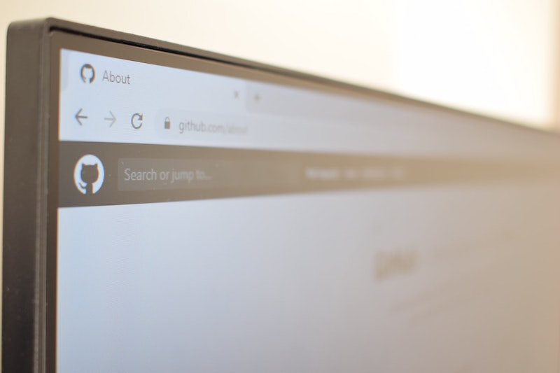

Git/GitHub 1 : Découvrir GitHub
Introduction
Lorsque tu travailles sur un projet, la plupart du temps ce n'est pas tout seul mais avec tout une équipe.
Un point important pour pouvoir avancer sereinement est de conserver l'historique de toutes les modifications qui ont été apportée au projet.
Dans cette quête, nous allons parler de git, de GitHub et de la façon dont tu peux utiliser ces 2 services pour collaborer et conserver un historique de tes projets.

🤓 Objectifs :
- ✅ Comprendre ce qu'est la gestion de version (contrôle de version)
- ✅ Créer un dépôt (repository) sur Github
- ✅ Ajouter des contributions (commits) sur Github
- ✅ Afficher l'historique sur Github
👀 Contenu de la quête :
- Qu'est-ce que la gestion des versions ?
- Qu'est-ce que GitHub ?
- Premiers pas avec GitHub
🤷♂️ Qu'est-ce que la gestion des versions ?
Nous allons couvrir beaucoup d'informations sur git dans les quêtes suivantes. Dans celle-ci, nous nous concentrerons d'abord sur GitHub.
Tout ce que tu dois savoir pour l'instant, c'est que git est un outil de contrôle de version.
🤷♂️ Qu'est-ce que GitHub ?
GitHub est une plateforme en ligne très populaire offrant de nombreux services aux développeurs. Ses principales fonctionnalités sont:
- L'hébergement de code
- Le travail collaboratif entre les membres d'une équipe
- La découverte de nouveaux projets (souvent open-source) et la collaboration entre développeurs du monde entier. GitHub n'est pas unique - il a des concurrents tels que GitLab, Bitbucket, etc. Néanmoins, une chose est sûre: dans un futur proche, tu vas être amené à contribuer à des projets sur GitHub (ou l'une de ses alternatives) et à utiliser ces plateforme pour montrer tes projets aux recruteurs.
👉 Premiers pas avec GitHub
Suis cette super vidéo pour apprendre à créer un dépôt et à démarrer avec GitHub !
Depuis la publication de la vidéo, GitHub, comme de nombreux autres acteurs de l'univers git, a modifié le nom par défaut de la branche principale pour remplacer master par main.
☝️ Résumé
- Git est un système de contrôle de version
- Git t'aide à conserver l'historique de tes fichiers et à fournir des outils pour travailler en équipe sur les mêmes fichiers de manière concurrente
- Github est une plateforme en ligne qui propose des services tels que l'hébergement de code mais c'est aussi un lieu social où tu peux participer à des projets open source, partager et découvrir de nouveaux projets.
📝 Quiz
true|||true|||false
# Git peut-être utilisé sans GitHub ?
[x] Vrai
[] Faux
# Qu'est-ce qu'un commit ?
[x] L'enregistrement de modifications dans le projet
[] Un projet hébergé sur GiHub
[] Une demande d'ajout de fonctionnalité dans un projet
# Qu'est-ce qu'un repo GitHub
[] La contribution d'un développeur à un projet
[x] Un raccourci pour repository
[x] Le nom d'un projet géré par git
# Quelles sont les fonctionnalités principales offertes par git
[x] Récupérer n'importe quelle version précédente d'un fichier d'un dépôt
[x] Copier un dépôt pour travailler en parallèle
[] Vérifier que le code est fonctionnel
💪 Challenge
- Crée un compte sur GitHub.
- Crée un dépôt appelé
helloWorld. - Crée un fichier
hello.txtcontenant sur sa première ligne :Hello Wrold(la faute de frappe est volontaire) et enregistre le par un commit avec une description (in english please). - Corrige la faute de frappe en remplaçant par
Hello World !et fais un nouveau commit (toujours avec une description pertinente, par exemple: Fix the typo). - Ajoute maintenant ton nom à la fin du fichier
hello.txtpour signer ton œuvre comme il se doit et fais un commit avec une description décrivant le changement. - Partage le lien vers ton dépôt comme solution à ce défi.
🧐 Critères de validation
- [ ] Le lien soumis fait référence à un dépôt Github appelé
helloWorld. - [ ] L'historique du fichier
hello.txtmontre trois commits, chacun avec une description du changement, en anglais.
Ressources partagées sur cette quête
- Introduction à Github en françaishttps://www.youtube.com/watch?v=eXF0epLeCgo
- Un tuto assez complet et bien expliqué pour commencer utiliser git https://grafikart.fr/tutoriels/git-presentation-1090#autoplay
- exo sur git pour bien le prendre en main :)https://learngitbranching.js.org/?locale=fr_FR
- GitHub Cheat Sheet / Versionner son travailhttps://raw.githubusercontent.com/JustFS/cours-github/master/versionner.png
- Introduction simple a Git en francaishttps://www.youtube.com/watch?v=gp_k0UVOYMw&list=PLB4ymnBGpxDdK6Mr-RSZDaNIu3boHsZvQ&index=3
- Git and GitHub for Poets: the full playlist including the video shared in the quest.https://www.youtube.com/playlist?list=PLRqwX-V7Uu6ZF9C0YMKuns9sLDzK6zoiV